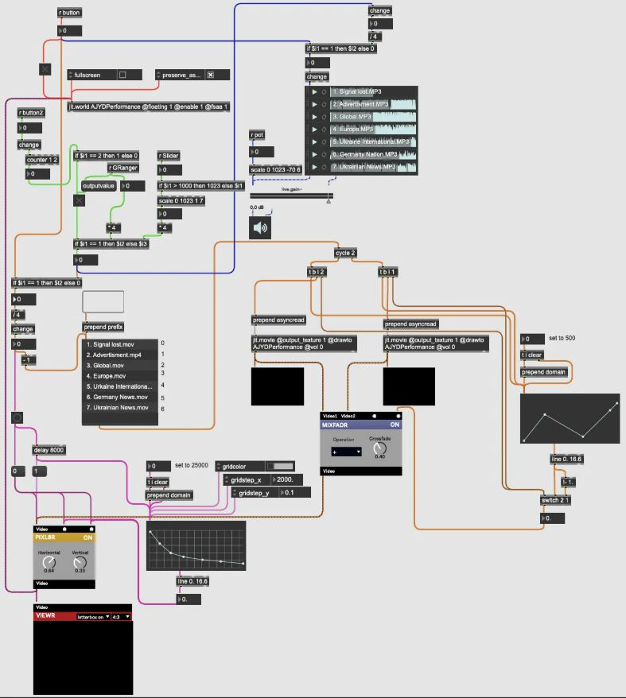
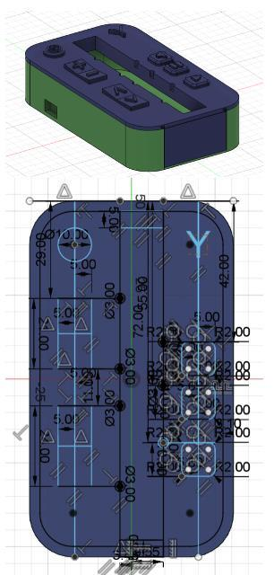
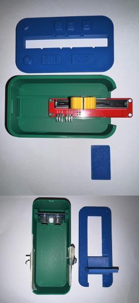

Amusing To Death
Inspired by Neil Postman's 1985 book of the same name, this performance piece explored how mass media distorts our perception of reality mixing catastrophic news with trivial entertainment until the two become indistinguishable. Developed in collaboration with a partner, the work asked: what happens when the news stops meaning anything?

Custom 3D-printed TV remotes were designed and built from scratch, each housing an Arduino connected to a slider and ultrasonic ranger. The remotes controlled everything in real time, the closer a performer moved to the screen, the more simultaneous news broadcasts triggered. Distance became data. Movement became meaning
The entire video system was designed and built in Max MSP a custom MIXFADR crossfader cycling between 12 broadcast fragments, paired with a PIXL8R effect that progressively degraded the image as broadcasts multiplied. Audio and video were controlled independently, allowing the performance to build from a single news clip into a wall of pixelated noise before collapsing into an advertisement jingle. Every transition, every glitch, every beat of silence was engineered.


Skills applied
Technical: Arduino hardware integration sensors, sliders, breadboarding. Max MSP custom patch design, video mixing, real-time audio/video control. 3D printing designed and prototyped functional physical objects from scratch.
Design: System design every component (hardware, software, performance) was designed to work as one cohesive experience. Interaction design physical movement controlling digital output is a UX principle applied to performance art. Prototyping — went from sketch to high-fidelity functional remote
Critical: design thinking the project wasn't just built, it argued something. Research-led grounded in Postman's media theory, applied to current global events. Storytelling through design concept, build, and performance all told the same story